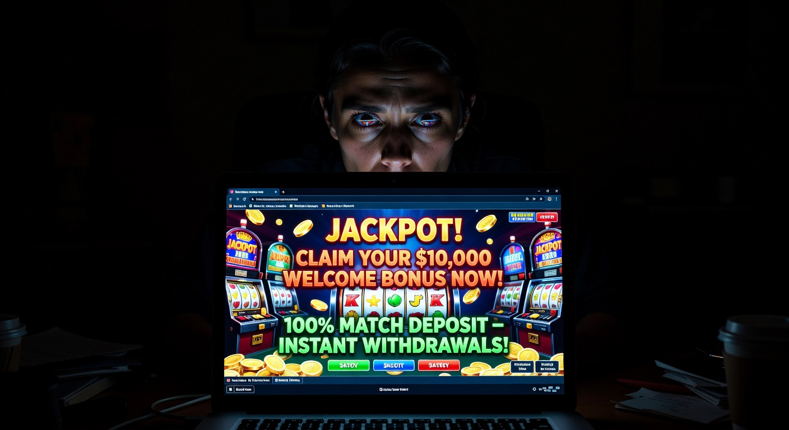
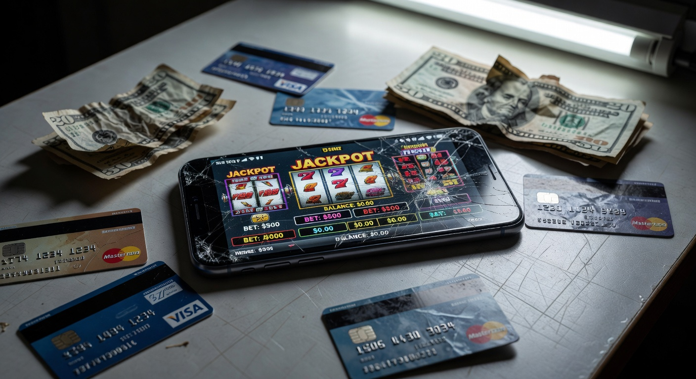

Online casino illegaal: Alles over gokken zonder Nederlandse vergunning
Sinds de opening van de Nederlandse kansspelmarkt in oktober 2021 is het landschap van online kansspelen drastisch veranderd. Anno 2026 is de regelgeving strenger dan ooit en de Kansspelautoriteit (KSA) treedt hard op tegen aanbieders die zonder de juiste papieren opereren. Toch blijft de term online casino illegaal een veelgezochte term onder Nederlandse gokkers. Dit heeft vaak te maken met de zoektocht naar hogere bonussen, een breder spelaanbod of het omzeilen van nationale uitsluitingsregisters.
In dit uitgebreide artikel duiken we diep in de wereld van de niet-vergunde goksites. We bespreken waarom een online casino illegaal wordt genoemd in de context van de Nederlandse wetgeving en wat de risico's zijn voor jou als speler. Daarnaast kijken we naar de rol van de KSA en hoe de markt zich tot in 2026 heeft ontwikkeld. Het doel is om een helder en objectief beeld te schetsen van de huidige status van online gokken in Nederland.
Wat bepaalt of een online casino illegaal is?
De definitie van een illegaal platform is in Nederland vrij eenvoudig: elk platform dat kansspelen aanbiedt aan Nederlandse consumenten zonder in het bezit te zijn van een vergunning van de KSA, wordt aangemerkt als een online casino illegaal. Het maakt hierbij niet uit of de aanbieder elders in de wereld, zoals in Malta of Curaçao, wel een licentie heeft. Voor de Nederlandse wet telt alleen de lokale vergunning.
De Nederlandse staat heeft deze strikte regels ingevoerd om de consument te beschermen, gokverslaving te voorkomen en criminaliteit tegen te gaan. Wanneer een platform zich specifiek richt op de Nederlandse markt door bijvoorbeeld de Nederlandse taal aan te bieden, iDEAL als betaalmiddel te gebruiken of Nederlandse symbolen te hanteren, wordt dit direct opgemerkt. Een online casino illegaal riskeren enorme boetes die in 2026 kunnen oplopen tot miljoenen euro's per overtreding.
De rol van de Kansspelautoriteit (KSA)
De Kansspelautoriteit is de onafhankelijke toezichthouder op de markt voor de kansspelen. Hun taak is drieledig: het beschermen van de speler, het voorkomen van gokverslaving en het bestrijden van illegaliteit. In 2026 maakt de kansspelautoriteit gebruik van geavanceerde monitoringtools om elk online casino illegaal op te sporen dat probeert de Nederlandse wetgeving te omzeilen.
De KSA heeft ook de bevoegdheid om bindende aanwijzingen te geven aan internetproviders en betaaldienstverleners om de toegang tot een online casino illegaal te blokkeren. Hierdoor is het voor niet-vergunde aanbieders steeds moeilijker geworden om voet aan de grond te krijgen in Nederland. De transparantie die de KSA biedt via hun officiële zwarte lijst helpt spelers om veilige keuzes te maken.
De Wet Kansspelen op afstand (KOA)
De Wet Kansspelen op afstand, ook wel de Wet KOA genoemd, vormt de juridische basis voor de huidige markt. Deze wet reguleert de voorwaarden waaronder een vergunning kan worden verleend. Sinds de invoering is het onderscheid tussen een legaal en een online casino illegaal glashelder. De wet verplicht aanbieders onder andere om aangesloten te zijn op het Cruks-systeem en om een controledatabank (CDB) bij te houden.
Voor de speler betekent de Wet KOA dat er toezicht is op de eerlijkheid van de spellen en de uitbetaling van winsten. Een online casino illegaal houdt zich niet aan deze wet en biedt dus geen van deze garanties. In 2026 zijn de regels rondom reclame-uitingen onder de Wet KOA nog verder aangescherpt om kwetsbare groepen te beschermen tegen de verlokkingen van het gokken.
Waarom zoeken spelers naar een illegaal online casino?

Ondanks de gevaren en het gebrek aan bescherming, is er nog steeds een groep spelers die bewust kiest voor een online casino illegaal. De redenen hiervoor zijn divers, maar vaak terug te leiden naar de beperkingen die de Nederlandse wetgeving oplegt aan vergunde aanbieders. De legale markt is veilig, maar voor sommigen voelt het ook als te restrictief.
Een online casino illegaal biedt vaak zaken aan die in Nederland verboden zijn, zoals autoplay-functies, snellere spins bij gokkasten en het ontbreken van strikte stortingslimieten. Dit trekt spelers aan die de controle over hun eigen speelgedrag menen te hebben, maar in de praktijk lopen zij hiermee grote financiële en psychologische risico's.
Gokken zonder Cruks registratie
Een van de meest gehoorde redenen om te spelen bij een online casino illegaal is het omzeilen van het Centraal Register Uitsluiting Kansspelen (Cruks). Spelers die in dit register staan, hebben zichzelf een gokstop opgelegd of zijn door een aanbieder aangemeld vanwege problematisch speelgedrag. Voor hen is een online casino illegaal de enige manier om toch te kunnen gokken.
Het is belangrijk om te begrijpen dat Cruks er is voor de veiligheid van de speler. Het zoeken naar een online casino illegaal om deze blokkade te omzeilen is een teken van beginnende of gevorderde gokproblematiek. Legale aanbieders controleren elke speler via hun BSN in de database van Cruks voordat zij toegang verlenen tot het platform.
Hogere bonussen en minder restricties
In de Nederlandse markt zijn bonussen aan strenge regels gebonden. Zo mogen jongvolwassenen (18-24 jaar) vaak geen gebruik maken van bonussen en zijn de bedragen gematigd om overmatig spelen niet te stimuleren. Een online casino illegaal heeft geen boodschap aan deze regels en strooit met gigantische welkomstbonussen en cashback-deals die in Nederland illegaal zijn.
Daarnaast kennen deze illegale platforms vaak geen "speelpauzes" of verplichte limieten die de Nederlandse overheid in 2026 heeft aangescherpt. Hoewel dit voor de speler op de korte termijn voordelig lijkt, leiden de vage bonusvoorwaarden bij een online casino illegaal vaak tot problemen wanneer men daadwerkelijk probeert winsten uit te cashen.
De gevaren van spelen bij niet-vergunde aanbieders

Het grootste risico van een online casino illegaal is het totale gebrek aan toezicht. Als er iets misgaat, sta je als speler volledig in de kou. Er is geen onafhankelijke instantie waarbij je een klacht kunt indienen en de kans dat je je geld terugziet bij een conflict is nagenoeg nihil. In 2026 zien we nog steeds veel gevallen van spelers die hun account geblokkeerd zien worden zodra ze een groot bedrag winnen.
Bovendien is de beveiliging van persoonlijke gegevens bij een online casino illegaal vaak ondermaats. Je deelt kopieën van je identiteitsbewijs en bankgegevens met een organisatie die buiten het bereik van de Europese privacywetgeving (AVG) valt. Identiteitsfraude en het doorverkopen van je gegevens aan andere malafide partijen zijn reële gevaren.
Geen juridische bescherming bij conflicten
Stel je voor dat je een grote jackpot wint bij een online casino illegaal, maar het platform weigert uit te betalen onder het mom van "verdachte speelpatronen". In Nederland kun je in zo'n geval naar de KSA stappen of juridische stappen ondernemen. Bij een buitenlandse, niet-vergunde aanbieder heb je geen poot om op te staan. De algemene voorwaarden van een online casino illegaal zijn vaak zo opgesteld dat zij altijd in het voordeel van het casino uitvallen.
De afgelopen jaren zijn er wel rechtszaken geweest waarbij spelers hun verloren geld terugeisten van een online casino illegaal, omdat de aanbieder geen Nederlandse licentie had. Hoewel sommige rechters de speler in het gelijk stelden, is het proces langdurig, kostbaar en de uitkomst is nooit gegarandeerd. Voorkomen is in dit geval beter dan genezen.
Onzekerheid over eerlijk spelverloop
Bij een vergund casino in Nederland worden de algoritmes en de Random Number Generator (RNG) regelmatig gecontroleerd door onafhankelijke testlaboratoria. Je weet zeker dat de RTP (Return to Player) klopt met wat er wordt geadverteerd. Bij een online casino illegaal is die garantie er niet. Het casino kan de software in theorie manipuleren om het huisvoordeel stiekem te vergroten.
Bovendien maken veel illegale goksites gebruik van nagemaakte software van bekende providers zoals NetEnt of Play'n GO. Deze spellen zien er identiek uit, maar de uitbetalingspercentages zijn veel lager. Dit is een veelvoorkomende tactiek van een online casino illegaal om spelers sneller van hun geld te ontdoen zonder dat zij het doorhebben.
Cruks omzeilen, kan dat?
Een veelgestelde vraag in 2026 is of het mogelijk is om het Cruks-systeem te omzeilen. Technisch gezien is het antwoord ja, maar het brengt enorme risico's met zich mee. Men kan terecht bij een online casino illegaal dat geen connectie heeft met de Nederlandse database. Deze sites controleren je BSN niet en laten iedereen toe, ongeacht of je in het Centraal Register Uitsluiting Kansspelen staat of niet.
Echter, het omzeilen van Cruks door te spelen bij een online casino illegaal is vergelijkbaar met het wegkippen van de remmen van je auto. Cruks is een vangnet voor spelers die zichzelf willen beschermen tegen de destructieve gevolgen van gokverslaving. Platforms die adverteren met "No Cruks" zijn per definitie illegaal op de Nederlandse markt en opereren vaak vanuit schimmige jurisdicties.
Voor wie op zoek is naar een betrouwbaar casino zonder cruks, is het essentieel om te beseffen dat "betrouwbaar" en "zonder Cruks" binnen de Nederlandse wetgeving een tegenstelling vormen. Elke aanbieder die de veiligheidsregels negeert, is onbetrouwbaar voor de Nederlandse consument. Het omzeilen van het register via een online casino illegaal leidt vaak tot een vicieuze cirkel van schulden en persoonlijke problemen.
Kan je van Cruks af?
Als je eenmaal bent ingeschreven in Cruks, is er een minimale periode van zes maanden waarin de uitsluiting geldt. Gedurende deze tijd is het onmogelijk om bij een legaal Nederlands casino te spelen. Veel spelers krijgen na verloop van tijd spijt en zoeken naar manieren om de blokkade op te heffen. In de meeste gevallen moet je de volledige termijn uitzitten die je hebt gekozen (variërend van 6 maanden tot 99 jaar).
Er zijn situaties waarin men probeert via de rechter de inschrijving ongedaan te maken, maar de KSA houdt hierin meestal voet bij stuk ter bescherming van de betrokkene. Omdat men niet direct van de blokkade af kan, wijken sommigen uit naar een online casino illegaal. Dit is echter de slechtste beslissing die men kan nemen, omdat de bescherming die Cruks biedt dan volledig wegvalt op een moment dat de speler blijkbaar nog steeds een sterke drang voelt om te gokken.
Een gokstop nemen
Een gokstop nemen is een dappere en noodzakelijke stap voor iedereen die merkt dat het gokken niet langer leuk is, maar een obsessie wordt. In Nederland is dit uitstekend geregeld via de website van de KSA en het Cruks-systeem. Met één druk op de knop, vaak via DigiD, kun je jezelf uitsluiten van alle legale casino's en speelhallen in het land.
Een gokstop is pas echt effectief als je ook alle toegangswegen naar een online casino illegaal blokkeert. Dit kan door gebruik te maken van software zoals Gamban of BetBlocker, die de toegang tot gokwebsites op je apparaten blokkeert, ongeacht of ze een vergunning hebben. In 2026 raden hulpverleners aan om een gokstop altijd te combineren met professionele hulp, omdat het vermijden van een online casino illegaal alleen op basis van wilskracht vaak erg moeilijk is.
Buitenlandse licenties vs. Nederlandse vergunningen
Veel spelers raken in de war door de verschillende licenties die op internet te vinden zijn. Een site kan een licentie hebben van de Malta Gaming Authority (MGA) en er zeer professioneel uitzien. Toch is dit voor een Nederlander een online casino illegaal als de KSA-licentie ontbreekt. Het verschil zit hem in de lokale wetgeving die sinds 2021 leidend is.
In onderstaande tabel zie je de belangrijkste verschillen tussen de meest voorkomende licenties in 2026:
| Kenmerk | Nederlandse Vergunning (KSA) | Malta (MGA) | Curaçao eGaming |
|---|---|---|---|
| Wettelijk in NL? | Ja, volledig legaal | Nee, online casino illegaal | Nee, online casino illegaal |
| Cruks Controle? | Ja, verplicht | Nee | Nee |
| iDEAL Betalingen? | Ja, standaard | Soms (vaak geblokkeerd) | Zelden (meestal Crypto) |
| Spelersbescherming | Zeer hoog | Gemiddeld | Laag tot nihil |
| Belastingvrij winnen? | Ja (casino betaalt) | Nee (zelf aangifte doen) | Nee (zelf aangifte doen) |
Malta Gaming Authority (MGA)
De MGA was jarenlang de gouden standaard voor online gokken in Europa. Veel bekende namen zoals Unibet en Betsson opereerden onder deze licentie. Echter, sinds de invoering van de Wet KOA in Nederland, mogen MGA-casino's geen Nederlandse spelers meer accepteren. Doen ze dit wel, dan worden ze door de KSA bestempeld als een online casino illegaal.
Hoewel de MGA strenge eisen stelt aan eerlijk spel en financiële stabiliteit, biedt het geen bescherming voor de Nederlandse consument. De KSA kan niet bemiddelen bij conflicten met een MGA-casino. Voor de Nederlandse wetgever blijft elk platform zonder KSA-stempel een online casino illegaal, ongeacht hun reputatie op het eiland Malta.
Curaçao eGaming licenties
Licenties uit Curaçao staan bekend als de minst strikte in de industrie. Het is relatief eenvoudig en goedkoop om daar een vergunning te krijgen, en het toezicht is minimaal. De meeste goksites die actief Nederlandse spelers werven ondanks het verbod, vallen in de categorie online casino illegaal met een Curaçaose licentie. Deze sites accepteren vaak cryptocurrencies om bankblokkades te omzeilen.
Het spelen bij een online casino illegaal uit Curaçao is extreem risicovol. Er zijn talloze rapporten van spelers die hun winsten nooit hebben ontvangen of waarvan de accounts zonder opgaaf van reden werden gesloten. Omdat de juridische structuur daar complex is, is het praktisch onmogelijk om je recht te halen tegenover een dergelijke aanbieder.
Geld terugvorderen van illegale goksites
Een interessante ontwikkeling in de afgelopen jaren is de mogelijkheid om verloren geld terug te vorderen van een online casino illegaal. Omdat deze aanbieders de Nederlandse wet overtraden door zonder vergunning hun diensten aan te bieden, is de overeenkomst tussen de speler en het casino in feite nietig. Juridisch gezien hadden zij de inzetten van Nederlandse spelers nooit mogen accepteren.
In 2026 zijn er gespecialiseerde advocatenkantoren die claims indienen tegen de grote moederbedrijven achter een online casino illegaal. Het gaat hierbij vaak om spelers die tienduizenden euro's hebben verloren in de periode voordat de markt gereguleerd was, of bij sites die ook na 2021 illegaal bleven opereren. Dit heeft geleid tot een golf van onzekerheid bij internationale gokbedrijven.
Recente uitspraken van Nederlandse rechters
In 2024 en 2025 hebben verschillende rechtbanken in Nederland baanbrekende vonnissen uitgesproken. In meerdere zaken werd een online casino illegaal veroordeeld tot het terugbetalen van de volledige verliezen van een speler. De rechters oordeelden dat het publieke belang (de gokwetgeving) zwaarder weegt dan de contractvrijheid van het casino.
Dit betekent echter niet dat elke speler zomaar zijn geld terugkrijgt. De bewijslast ligt bij de eiser en het proces kan jaren duren. Bovendien proberen veel bedrijven achter een online casino illegaal de uitspraken te negeren door geen bezittingen in Nederland aan te houden. Toch is het een krachtig signaal dat de tijd van straffeloos opereren op de Nederlandse markt definitief voorbij is.
Aanpak illegale online gokspelen
De aanpak van de overheid tegen gokken bij een online casino illegaal is in 2026 veelzijdiger geworden. Het gaat niet meer alleen om het beboeten van de aanbieders. De focus ligt nu ook op de hele keten: van de softwareleveranciers die hun spellen aanbieden aan illegale sites, tot de affiliates die reclame maken voor een online casino illegaal op social media en websites.
De KSA werkt nauw samen met internationale partners om de geldstromen naar een online casino illegaal te blokkeren. Door samenwerkingen met grote banken en betaaldienstverleners wordt het voor Nederlandse spelers steeds lastiger om stortingen te doen bij niet-vergunde sites. Deze proactieve houding heeft de zwarte markt aanzienlijk verkleind, al blijft volledige uitroeiing van het online casino illegaal een utopie in een digitale wereld.
Website Kansspelautoriteit
Voor iedere speler die twijfelt over de legaliteit van een aanbieder, is de officiële informatie over de Nederlandse gokmarkt te vinden op de website van de Kansspelautoriteit. Hier vind je de zogenaamde "Kansspelwijzer". Door simpelweg de naam van een site in te vullen, zie je direct of het een legaal platform is of een online casino illegaal.
De KSA-website fungeert ook als een portaal voor meldingen. Als je een online casino illegaal tegenkomt dat zich specifiek op Nederlanders richt, kun je daar een melding van maken. Dit helpt de toezichthouder om sneller in te grijpen en andere spelers te beschermen. Transparantie vanuit de toezichthouder is een van de belangrijkste wapens gebleken in de strijd tegen illegaliteit.
Bekende legale alternatieven in 2026
Waarom zou je het risico lopen bij een online casino illegaal als er in Nederland inmiddels tientallen veilige en kwalitatief hoogwaardige aanbieders zijn? Deze casino's bieden niet alleen de zekerheid van uitbetaling, maar ook uitstekende klantenservice en een spelaanbod dat volledig is afgestemd op de Nederlandse voorkeuren. We lichten enkele prominente namen toe.
Het spelen bij deze legale partijen zorgt ervoor dat je bijdraagt aan de Nederlandse economie (via kansspelbelasting) en dat je gebruik kunt maken van veilige betaalmethoden zoals iDEAL. In tegenstelling tot een online casino illegaal, word je hier als klant gerespecteerd en beschermd.
2. Kansino – Nederlandse live games en No Deposit bonus
Kansino heeft zich sinds de lancering gepositioneerd als een van de meest betrouwbare namen in de markt. Ze staan bekend om hun enorme spelaanbod en hun focus op snelheid. Terwijl je bij een online casino illegaal vaak dagen moet wachten op je geld, verwerkt Kansino uitbetalingen vaak binnen enkele minuten.
Hun live casino gedeelte is indrukwekkend, met Nederlandstalige dealers die de ervaring naar een hoger niveau tillen. Kansino vermijdt de agressieve marketingtactieken die je vaak ziet bij een online casino illegaal en focust puur op de spelervaring. Voor veel Nederlandse gokkers is dit het ideale alternatief voor de onzekerheid van de illegale markt.
3. Fair Play Casino – Eerlijk en betrouwbaar casino uit Nederland
Met een rijke historie in fysieke speelhallen was de stap naar online gokken voor Fair Play Casino een logische. Zij begrijpen de Nederlandse markt als geen ander. Waar een online casino illegaal vaak onduidelijk is over de winstkansen, is Fair Play volledig transparant over de winkansen en de werking van hun spellen.
Ze bieden een unieke sfeer die herkenbaar is voor wie wel eens een van hun vestigingen heeft bezocht. Fair Play Casino is een schoolvoorbeeld van hoe een vergunde aanbieder de concurrentie met een online casino illegaal aankan door simpelweg een betere en veiligere dienst te leveren.
4. Circus Casino – No Cruks casino met sportweddenschappen
Hoewel de term "No Cruks" vaak geassocieerd wordt met een online casino illegaal, wordt deze term soms (foutief) in de volksmond gebruikt om aan te geven dat een casino ook sportweddenschappen aanbiedt buiten het casino-aanbod om. Circus Casino is echter volledig vergund en aangesloten op Cruks. Het biedt een geweldige combinatie van casinospellen en sportsbetting.
Spelers die bij een online casino illegaal wedden op sport, lopen het risico dat hun weddenschappen ongeldig worden verklaard bij winst. Bij Circus Casino heb je die onzekerheid niet. Hun platform is innovatief, snel en biedt uitstekende odds die vaak kunnen wedijveren met de grootste internationale (maar illegale) namen.
7. TonyBet – Snelgroeiend platform met focus op innovatie
TonyBet is een van de nieuwere sterren aan het Nederlandse firmament. In 2026 hebben zij een solide marktaandeel veroverd door zich te focussen op technologische innovatie en een superieure mobiele ervaring. Veel spelers die voorheen bij een online casino illegaal speelden vanwege een betere app, zijn inmiddels overgestapt naar TonyBet.
Het platform biedt een frisse wind in de Nederlandse markt. Ze laten zien dat een legale status niet betekent dat de website saai of traag moet zijn. Met snelle laadtijden en een modern design is TonyBet een geduchte concurrent voor elk online casino illegaal dat probeert spelers te verleiden met mooie plaatjes.
Andere grote namen: Casino 777, Jack’s en Unibet
Naast de genoemde partijen zijn er nog andere reuzen actief. Casino 777 biedt een zeer elegante speelomgeving, terwijl Jack’s Casino Online de vertrouwde Nederlandse gastvrijheid naar het internet brengt. En natuurlijk is er Unibet, een wereldwijde gigant die na een korte afwezigheid nu weer volledig legaal in Nederland opereert.
Ook ComeOn! Casino heeft een trouwe schare fans opgebouwd. Al deze partijen hebben één ding gemeen: ze opereren onder de strengste regels ter wereld. Wie kiest voor deze namen, kiest voor gemoedsrust. De verleiding van een online casino illegaal vervalt snel wanneer je de kwaliteit en service van deze legale toppers ervaart.
Inschrijven bij een online casino illegaal vs legaal
Het inschrijfproces bij een legaal casino in Nederland kan soms wat tijdrovend aanvoelen. Je moet je identiteit verifiëren met iDIN of een paspoort-scan, je BSN wordt gecontroleerd in Cruks en je moet strikte limieten instellen voor je speeltijd en stortingen. Een online casino illegaal maakt het je veel makkelijker: vaak is een e-mailadres en een wachtwoord voldoende om direct te beginnen met spelen.
Laat je echter niet misleiden door dit gemak. De strenge inschrijfprocedure in Nederland is er om jou te beschermen tegen fraude en onverantwoord speelgedrag. Een online casino illegaal wil dat je zo snel mogelijk begint met storten, zonder dat je nadenkt over de consequenties. Bovendien krijg je bij de legale aanbieders pas problemen bij de uitbetaling als de verificatie niet klopt, terwijl je bij een online casino illegaal pas dán merkt dat je accountgegevens nooit echt geaccepteerd zijn voor winstuitnames.
Hoe herken je een veilige goksite in Nederland?
Het onderscheiden van een legaal platform en een online casino illegaal is in 2026 gelukkig niet moeilijk als je weet waar je op moet letten. De KSA verplicht alle vergunde aanbieders om het "Vergunninghouder Kansspelautoriteit" logo duidelijk zichtbaar op hun website te plaatsen, meestal in de footer (onderaan de pagina).
- Controleer op het officiële KSA-logo.
- Kijk of de site iDEAL aanbiedt als betaalmethode (vrijwel elk online casino illegaal kan geen iDEAL aanbieden).
- Check of er een koppeling is met Cruks.
- Verifieer of de URL eindigt op .nl (hoewel dit geen 100% garantie is, gebruiken veel legale sites dit).
- De website moet informatie bieden over verantwoord spelen en direct linken naar hulpinstanties.
Als een site alleen cryptocurrencies zoals Bitcoin accepteert, is dit een enorme rode vlag. In 2026 is crypto nog steeds niet toegestaan bij vergunde Nederlandse aanbieders. Een site die alleen crypto accepteert, is dus per definitie een online casino illegaal.
Kansspelbelasting betalen bij buitenlandse aanbieders
Een aspect dat vaak over het hoofd wordt gezien bij gokken bij een online casino illegaal, is de belastingplicht. Bij een vergund Nederlands casino wordt de kansspelbelasting (in 2026 een vastgesteld percentage van de bruto winst) direct door het casino afgedragen. Als speler ontvang je het nettobedrag op je rekening en hoef je niets meer te doen.
Speel je echter bij een online casino illegaal dat buiten de Europese Unie is gevestigd, dan ben je als speler zelf verantwoordelijk voor het aangeven van je winsten bij de Belastingdienst. Doe je dit niet, dan bega je belastingontduiking. Dit kan leiden tot hoge boetes en naheffingen die je winst volledig doen verdampen. De fiscus krijgt via moderne monitoring steeds vaker inzicht in onverklaarbare geldstromen van een online casino illegaal naar Nederlandse bankrekeningen.
De evolutie van de gokmarkt in 2026
We bevinden ons nu in 2026 en de markt is volwassen geworden. De eerste jaren na de regulering waren chaotisch, met veel agressieve reclames en onduidelijkheid. Inmiddels is de rust wedergekeerd. De overheid heeft de teugels strakker aangetrokken, wat ertoe heeft geleid dat het aantal actieve gokkers bij een online casino illegaal gestaag afneemt.
De focus is verschoven van kwantiteit naar kwaliteit. Legale aanbieders investeren fors in "Artificial Intelligence" om problematisch speelgedrag in een vroeg stadium te herkennen. Dit is een service die je bij een online casino illegaal nooit zult vinden; daar is elk verlies van de speler immers pure winst voor het huis. De Nederlandse markt wordt in 2026 internationaal gezien als een van de veiligste, maar ook meest gereguleerde ter wereld.
Conclusie over de huidige gokmarkt
Hoewel de verleiding van een online casino illegaal groot kan zijn door de belofte van snelle winsten en geen regels, wegen de nadelen absoluut niet op tegen de voordelen. De risico's op financiële malversaties, identiteitsdiefstal en het gebrek aan verslavingspreventie maken deze platforms tot een gevaarlijke keuze. De Nederlandse wetgeving is er niet om je dwars te zitten, maar om een eerlijk en veilig spel te garanderen.
In 2026 is er geen enkele reden meer om uit te wijken naar een online casino illegaal. Het legale aanbod is divers, technologisch hoogstaand en bovenal betrouwbaar. Of je nu kiest voor Kansino, Unibet of een van de andere vergunde partijen, je weet zeker dat je geld veilig is en dat het spel eerlijk verloopt. Gokken moet een vorm van entertainment blijven, en dat kan alleen in een omgeving die jouw veiligheid als prioriteit stelt.
Veelgestelde vragen
Is het strafbaar om te spelen bij een online casino illegaal?
Hoewel de wet zich primair richt op de aanbieders van een online casino illegaal, ben je als speler technisch gezien ook in overtreding wanneer je deelneemt aan illegale kansspelen. In de praktijk worden individuele spelers zelden vervolgd, maar je verliest wel alle juridische bescherming en loopt het risico op fiscale boetes.
Wat moet ik doen als een online casino illegaal mijn geld niet uitbetaalt?
Helaas heb je in dit geval weinig mogelijkheden. De Kansspelautoriteit kan niet bemiddelen bij conflicten met een online casino illegaal. Je kunt een advocaat inschakelen om een claim in te dienen, maar dit is vaak een kostbare en onzekere weg. De beste manier om dit te voorkomen is uitsluitend te spelen bij vergunde aanbieders.
Kan ik iDEAL gebruiken bij een illegaal platform?
In 2026 is het nagenoeg onmogelijk om iDEAL te gebruiken bij een online casino illegaal. Betaaldienstverleners zijn wettelijk verplicht om transacties naar dergelijke sites te blokkeren. Als een site beweert iDEAL aan te bieden maar je wordt omgeleid naar een vage tussenpersoon, is dit een duidelijk teken van een online casino illegaal.
Waarom is Cruks zo belangrijk?
Cruks is het belangrijkste instrument om gokverslaving in Nederland te bestrijden. Het zorgt ervoor dat spelers die kwetsbaar zijn, niet langer kunnen worden verleid door gokadvertenties of toegang krijgen tot casino's. Een online casino illegaal dat Cruks negeert, vormt een direct gevaar voor de volksgezondheid.

Digitale marketeer en contentspecialist met ruim 7 jaar ervaring.